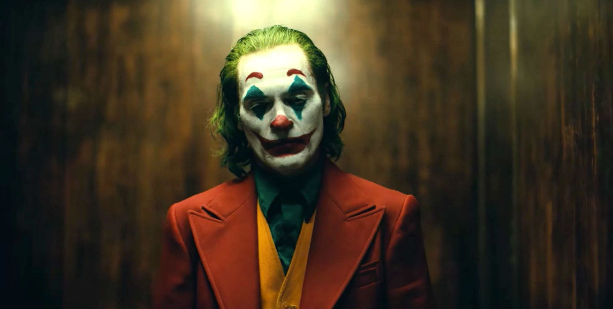

About Joker
The Joker is a supervillain created by Bill Finger, Bob Kane, and Jerry Robinson who first appeared in the debut issue of the comic book Batman (April 25, 1940), published by DC Comics. ... In his comic book appearances, the Joker is portrayed as a criminal mastermind.
In his comic book appearances, the Joker is portrayed as a criminal mastermind. Introduced as a psychopath with a warped, sadistic sense of humor, the character became a goofy prankster in the late 1950s in response to regulation by the Comics Code Authority, before returning to his darker roots during the early 1970s. As Batman's nemesis, the Joker has been part of the superhero's defining stories, including the murder of Jason Todd—the second Robin and Batman's ward—and the paralysis of one of Batman's allies, Barbara Gordon. The Joker has had various possible origin stories during his decades of appearances. The most common story involves him falling into a tank of chemical waste that bleaches his skin white and turns his hair green and lips bright red; the resulting disfigurement drives him insane. The antithesis of Batman in personality and appearance, the Joker is considered by critics to be his perfect adversary.
JOKER ENEMIES
- Aaron Cash
- Alfred Pennyworth
- Aqualad. Aqualad
- Artemis
- Azrael
- Bane
- Baraka
- Barbara Gordon
JOKER QUOTES
Here you can read some quotes by THE JOKER .